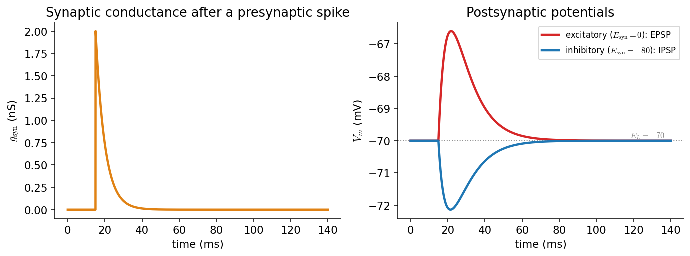
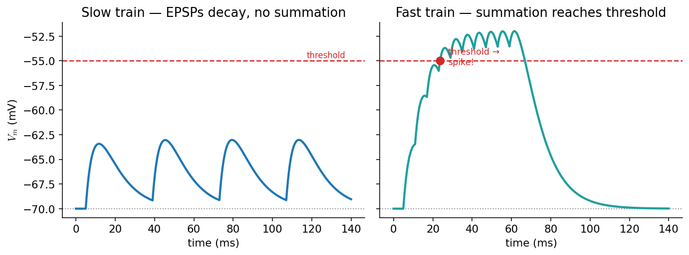
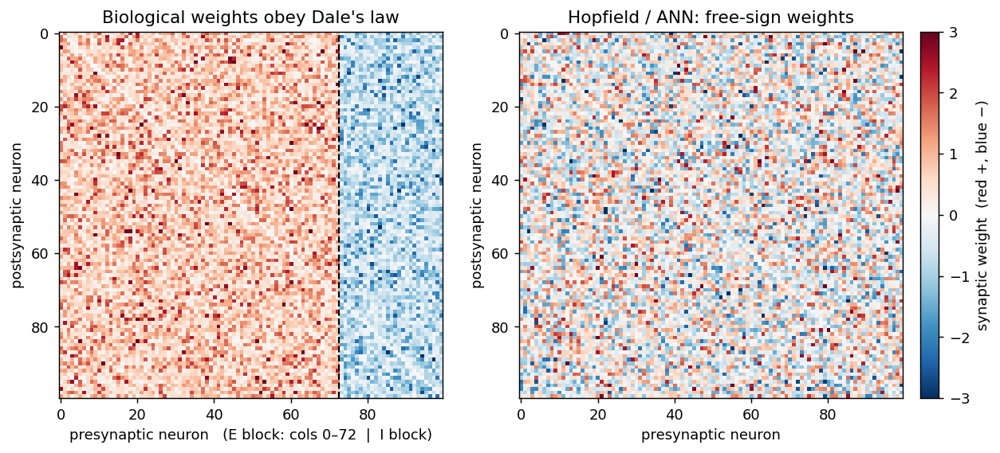

سیناپسها و ورودیِ سیناپسی
تا اینجا نورون را در انزوا دیدیم. اما نورونها در شبکه زندگی میکنند و از راهِ سیناپس با هم سخن میگویند. این فصل میپرسد: وقتی یک نورونِ پیشسیناپسی شلیک میکند، چه اثری بر ولتاژِ نورونِ پسسیناپسی میگذارد؟ پاسخ، همان مدلِ RC فصلِ پیش است، اما اینبار با یک جریانِ تازه: جریانِ سیناپسی.
در پایانِ این فصل خواهید توانست
- سیناپسِ شیمیایی را با یک رساناییِ گذرا \(g_{\text{syn}}(t)\) مدل کنید.
- جریانِ سیناپسی و نقشِ نیروی رانش \((V-E_{\text{syn}})\) را توضیح دهید.
- تفاوتِ سیناپسِ تحریکی و مهاری را از روی پتانسیلِ وارونگیِ \(E_{\text{syn}}\) دریابید.
- EPSP و IPSP را شبیهسازی کنید و انباشتگیِ زمانی را تا رسیدن به آستانه ببینید.
- اصلِ (قانونِ) دِیل را بیان کنید و بفهمید چرا نورونها به دو جمعیتِ تحریکی و مهاری تقسیم میشوند.
سیناپسِ شیمیایی: از اسپایک تا رسانایی
در یک سیناپسِ شیمیایی، اسپایکِ نورونِ پیشسیناپسی باعثِ رهاشدنِ ناقلِ عصبی میشود؛ ناقل به گیرندههای روی غشای پسسیناپسی میچسبد و کانالهای وابسته به لیگاند را میگشاید. نتیجه، یک افزایشِ گذرای رسانایی در غشای پسسیناپسی است. سادهترین مدلِ این رسانایی آن است که هر اسپایکِ پیشسیناپسی یک پرشِ \(\bar g\) به رسانایی میافزاید که سپس بهصورتِ نمایی با ثابتِ زمانیِ \(\tau_{\text{syn}}\) فرومینشیند:

چپ: رساناییِ سیناپسیِ \(g_{\text{syn}}(t)\) پس از یک اسپایکِ پیشسیناپسی — یک پرشِ سریع و افتِ نمایی. راست: پاسخِ ولتاژِ پسسیناپسی؛ سیناپسِ تحریکی (\(E_{\text{syn}}=0\)) یک EPSP (برجستگیِ رو به بالا) و سیناپسِ مهاری (\(E_{\text{syn}}=-80\)) یک IPSP (فرورفتگیِ رو به پایین) میسازد.
جریانِ سیناپسی و نیروی رانش
این رسانایی یک جریانِ سیناپسی تولید میکند که مانندِ جریانِ نشتی، هم به رسانایی و هم به فاصلهٔ ولتاژ تا پتانسیلِ وارونگیِ سیناپس بستگی دارد:
جملهٔ \((V_m - E_{\text{syn}})\) همان نیروی رانش است. مقدارِ \(E_{\text{syn}}\)، سرشتِ سیناپس را تعیین میکند:
- سیناپسِ تحریکی: \(E_{\text{syn}}\approx 0\) میلیولت (کانالهای AMPA/NMDA، عبورِ سدیم و پتاسیم). چون \(E_{\text{syn}}\) بسیار بالاتر از استراحت است، جریان، غشا را دپلاریزه میکند و \(V_m\) را بهسویِ آستانه میبرد.
- سیناپسِ مهاری: \(E_{\text{syn}}\approx -80\) میلیولت (کانالهای GABA، عبورِ کلر). چون \(E_{\text{syn}}\) نزدیک یا پایینترِ استراحت است، جریان، غشا را هایپرپلاریزه میکند یا دستِکم آن را نزدیکِ استراحت «قفل» میکند.
نکتهٔ ظریف این است که در حالتِ استراحت، IPSP کوچک است، چون نیروی رانشِ آن (\(V_m - E_{\text{syn}}\)) کوچک است. مهار اغلب نه با هایپرپلاریزهکردن، بلکه با بالابردنِ رسانایی عمل میکند و ورودیهای تحریکی را «کوتاه» (shunt) میکند — پدیدهای به نامِ مهارِ شنتی.
افزودنِ این جریان به مدلِ RC فصلِ پیش، مدلِ کاملِ نورونِ گیرنده را میدهد:
import numpy as np
C, g_L, E_L = 100.0, 10.0, -70.0 # passive membrane (from the RC chapter)
tau_syn = 5.0 # ms
def run(pre_spikes, g_bar, E_syn, T=140.0, dt=0.05):
"""Postsynaptic voltage driven by synaptic input arriving at pre_spikes (ms)."""
t = np.arange(0, T, dt)
V = np.full(len(t), E_L); g = 0.0; sp = list(pre_spikes)
for n in range(len(t) - 1):
while sp and sp[0] <= t[n]: # a presynaptic spike arrives
g += g_bar; sp.pop(0)
I_syn = -g * (V[n] - E_syn)
V[n+1] = V[n] + (-g_L*(V[n]-E_L) + I_syn) / C * dt
g += -g / tau_syn * dt # conductance decays
return t, V
t, V_epsp = run([15.0], g_bar=2.0, E_syn=0.0) # EPSP
t, V_ipsp = run([15.0], g_bar=10.0, E_syn=-80.0) # IPSP
انباشتگیِ سیناپسی: راه بهسوی آستانه
یک EPSP بهتنهایی نورون را شلیک نمیکند. اما نورون هزاران سیناپس دارد، و پاسخِ آن به جمعِ ورودیهاست. چون هر EPSP با ثابتِ زمانیِ غشا (\(\tau_m\)) میرا میشود، اگر ورودیها بهقدرِ کافی پشتِسرِهم برسند، EPSPها روی هم انباشته میشوند و ولتاژ میتواند به آستانهٔ شلیک برسد. این را انباشتگیِ زمانی (temporal summation) مینامند (انباشتگیِ فضایی نیز هست: ورودیهای همزمان از سیناپسهای مختلف).

انباشتگیِ زمانی. چپ: قطاری از EPSPهای با فاصلهٔ زیاد؛ هر EPSP پیش از رسیدنِ بعدی میرا میشود، پس ولتاژ هرگز به آستانه (خطچینِ قرمز) نمیرسد. راست: همان تعداد ورودی اما با فاصلهٔ کم؛ EPSPها انباشته میشوند، ولتاژ بالا میرود و به آستانه میرسد — نقطهای که نورون یک اسپایک تولید میکند.
پس نورون یک آشکارساز همزمانی و بسامد است: تنها وقتی ورودیهای تحریکی بهقدرِ کافی زیاد و نزدیک به هم باشند (و مهارِ کافی در کار نباشد) شلیک میکند. همینجاست که بیوفیزیکِ تکنورون به دینامیکِ شبکه میپیوندد: خروجیِ این فصل — جریانِ سیناپسی — دقیقاً ورودیِ مدلهای نورونی و شبکهای در بخشهای بعدیِ کتاب است.
اصلِ دِیل: نورونِ تحریکی یا مهاری
تا اینجا سیناپس را «تحریکی» یا «مهاری» نامیدیم، انگار این صفت به خودِ سیناپس بچسبد. اما پرسشی ژرفتر هست: آیا یک نورونِ پیشسیناپسی میتواند بر یکی از هدفهایش اثرِ تحریکی و بر دیگری اثرِ مهاری بگذارد؟ پاسخِ تجربی، تقریباً همیشه نه است. این مشاهده را اصلِ دِیل (Dale's principle) مینامند.
نامِ این اصل از هنری دِیل گرفته شده که در دههٔ ۱۹۳۰ دربارهٔ پیامرسانیِ شیمیایی کار میکرد؛ خودِ دِیل هرگز آن را بهصورتِ یک «اصل» بیان نکرد، و بعدها جان اِکلز (۱۹۵۴) این نام را بر پایهٔ این ایدهٔ او گذاشت که «همان ناقلِ عصبی از همهٔ پایانههای سیناپسیِ یک نورون رها میشود». صورتِ سختگیرانهٔ «هر نورون فقط یک ناقل» امروزه نادرست شناخته میشود — بسیاری از نورونها همزمان چند پیامرسان رها میکنند (پدیدهٔ همرهایی یا co-transmission). اما صورتِ پالودهترِ آن — که اکلز در ۱۹۷۶ با افزودنِ «ناقل یا ناقلها» بیان کرد — همچنان یک قاعدهٔ سرانگشتیِ نیرومند با استثناهای اندک است: یک نورون همان مجموعهٔ ناقلها را در همهٔ سیناپسهایش رها میکند، پس اثرِ آن بر همهٔ هدفها همعلامت است.
برای ما پیامدِ محاسباتیِ این اصل مهم است. در مدلهای شبکه، برهمکنشِ نورونها را با یک ماتریسِ وزنِ سیناپسیِ \(W\) نشان میدهیم که در آن \(W_{ij}\) وزنِ اتصال از نورونِ پیشسیناپسیِ \(j\) به نورونِ پسسیناپسیِ \(i\) است. اصلِ دِیل — که در بافتِ مغز به آن قانونِ دِیل هم میگویند — یک قیدِ ساختاری بر این ماتریس میگذارد: همهٔ اتصالهایی که از یک نورونِ پیشسیناپسی سرچشمه میگیرند، همعلامتاند (همه تحریکی یا همه مهاری). بهبیانِ دیگر، هر ستونِ ماتریسِ \(W\) تنها یک علامت دارد. همین قید، نورونها را به دو جمعیتِ مجزّای تحریکی و مهاری دستهبندی میکند — دستهبندیِ بنیادیِ نورونها در مغز.
این نکته نقطهٔ تمایزِ مهمی است میانِ شبکههای زیستی و شبکههای عصبیِ مصنوعی (مانندِ مدلِ هاپفیلد یا شبکههای یادگیریِ ژرف)، که در آنها وزنها آزادانه میتوانند هم مثبت و هم منفی باشند و یک واحد میتواند بعضی هدفها را برانگیزد و بعضی را مهار کند. طبیعت این آزادی را ندارد؛ در مغز، مهار باید از راهِ جمعیتهای جداگانهٔ نورونهای مهاری انجام شود، نه با منفیکردنِ وزنِ یک نورونِ تحریکی.
import numpy as np
rng = np.random.default_rng(0)
N, f_exc = 100, 0.8 # 100 neurons, 80% excitatory
is_exc = rng.random(N) < f_exc # each neuron's identity — fixed for life
sign = np.where(is_exc, +1.0, -1.0) # Dale: +1 for excitatory, -1 for inhibitory
W = np.abs(rng.normal(0, 1, (N, N))) # nonnegative synaptic *strengths*
W = W * sign[np.newaxis, :] # column j inherits presynaptic neuron j's sign
np.fill_diagonal(W, 0.0) # no self-synapses
# Dale's law holds by construction: every outgoing column has a single sign
single_signed = all(len(set(np.sign(W[W[:, j] != 0, j]))) <= 1 for j in range(N))
print("each presynaptic neuron is purely E or I:", single_signed) # True

ماتریسِ وزنِ سیناپسی (\(W_{ij}\): از پیشسیناپسیِ ستون به پسسیناپسیِ ردیف). چپ: با قانونِ دِیل، هر ستون تنها یک علامت دارد — نورونهای تحریکی (بلوکِ قرمز، وزنِ مثبت) و مهاری (بلوکِ آبی، وزنِ منفی) دو جمعیتِ جدا میسازند. راست: در مدلِ هاپفیلد/شبکهٔ مصنوعی، علامتِ وزنها آزاد است و چنین ساختاری وجود ندارد.
کجا دوباره به این برمیخوریم
قانونِ دِیل ستونفقراتِ ساختارِ شبکههای تحریکی–مهاری (E–I) است که در بخشِ شبکهها و در مدلهایی مانندِ ویلسون–کوان به کار میآید: در آنجا بهجای یک نورون، دو جمعیت (E و I) داریم که برهمکنششان ریتم و رقابت میسازد. تفکیکِ تحریک و مهار که اینجا در سطحِ تکسیناپس دیدیم، آنجا به معماریِ کلِ شبکه بدل میشود.
برای مطالعهٔ بیشتر
- مروری بر تاریخچه و صورتبندیهای اصلِ دِیل: ویکیپدیا — Dale's principle.
- نقشِ قانونِ دِیل در مدلهای شبکه و تمایزِ آن با مدلِ هاپفیلد: Neuronal Dynamics گرستنر و همکاران، بخشِ ۱۷٫۳.
تمرینها
-
نیروی رانش. یک EPSP را از دو سطحِ آغازینِ متفاوت (\(-70\) و \(-55\) میلیولت) شبیهسازی کنید. چرا دامنهٔ EPSP در ولتاژِ دپلاریزهتر کوچکتر است؟
-
مهارِ شنتی. یک سیناپسِ مهاری با \(E_{\text{syn}}=-70\) (دقیقاً برابرِ استراحت) بسازید. این سیناپس هیچ IPSPی تولید نمیکند، اما نشان دهید که هنوز میتواند یک EPSPِ همزمان را کوچک کند. این همان مهارِ شنتی است.
-
انباشتگی. آهنگِ قطارِ ورودیِ تحریکی را جارو کنید و کمینهبسامدی را بیابید که در آن انباشتگی به آستانه میرسد. این به \(\tau_m\) و \(\tau_{\text{syn}}\) چگونه بستگی دارد؟
-
توازنِ تحریک و مهار. یک قطارِ تحریکی که بهتنهایی به آستانه میرسد را با یک قطارِ مهاریِ همزمان ترکیب کنید و نشان دهید که مهار میتواند از شلیک جلوگیری کند. نسبتِ \(\bar g_{\text{inh}}/\bar g_{\text{exc}}\)ی لازم برای این کار چقدر است؟
-
قانونِ دِیل. یک ماتریسِ وزنِ \(N\times N\) با ۸۰٪ نورونِ تحریکی و ۲۰٪ مهاری بسازید که قانونِ دِیل را رعایت کند (هر ستون تکعلامت). سپس یک ماتریسِ آزاد-علامت (مانندِ هاپفیلد) بسازید و بهصورتِ عددی نشان دهید که در حالتِ اول هر ستون تنها یک علامت دارد، اما در حالتِ دوم نه. برای هر نورونِ پسسیناپسی، مجموعِ وزنهای ورودی از نورونهای تحریکی و از نورونهای مهاری را جداگانه حساب کنید.